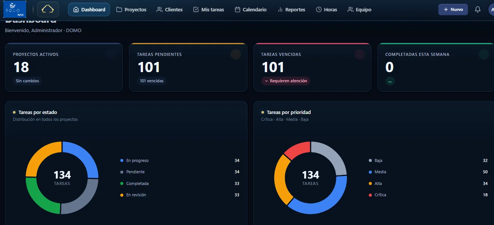

Estado incierto
Nadie puede explicar el estado real de cada proyecto sin preguntar uno por uno.
Centralice proyectos, tareas, datos, reportes y procesos en una plataforma configurada alrededor de su organización, no al revés.

DOMO convierte información dispersa en una lectura operativa común: responsabilidades, fechas, avance y alertas visibles sin reconstruir reportes cada semana.
Hojas de cálculo, correos y chats pueden sostener una operación pequeña. Cuando crecen los proyectos y los datos, también crecen la fricción, el reproceso y la incertidumbre.
Nadie puede explicar el estado real de cada proyecto sin preguntar uno por uno.
Todo parece urgente porque no existe un criterio visible y compartido.
Las fechas se pierden entre mensajes hasta que el incumplimiento ya ocurrió.
La saturación del equipo aparece tarde y sin datos para redistribuir trabajo.
Cada informe exige consolidar información desde cero, una y otra vez.
Las decisiones y responsabilidades quedan repartidas entre archivos y memoria.
Palacios diseña los módulos, campos, permisos y flujos de DOMO según el proceso real. La tecnología se adapta al negocio; el negocio no tiene que deformarse para usarla.
Responsables, prioridades, cronogramas, horas e indicadores de avance.
Formularios y flujos para capturar, validar y mantener la información operativa.
Generación asistida a partir de reglas del negocio, siempre con revisión humana.
Claridad diaria sobre qué está pendiente, quién responde y qué requiere atención.
Varias unidades, marcas o equipos dentro de la misma plataforma y con su propio contexto.
Cuando lo estándar no encaja, diseñamos una solución alrededor del proceso específico.
DOMO no promete automatizar por automatizar. Organiza la información que el equipo necesita para ejecutar con criterio, responder a tiempo y aprender de su propia operación.
Estado, riesgos y carga de trabajo disponibles sin solicitar reportes adicionales.
Responsables, cambios, fechas y evidencia conectados dentro del mismo flujo.
Menos consolidación manual y más tiempo dedicado a gestionar excepciones.
Indicadores útiles para priorizar acciones y tomar decisiones con contexto.
Empezamos por un alcance concreto, validamos el ajuste con quienes operan y ampliamos únicamente cuando el módulo ya genera valor.
La misma información puede responder preguntas diferentes sin crear versiones paralelas ni reportes contradictorios.
Panorama de avance, riesgos y puntos que requieren decisión.
Cronograma, prioridades, capacidad y vencimientos actualizados.
Claridad sobre qué hacer, en qué orden y con qué información.
Trazabilidad para consolidar y responder sin reconstruir datos.
No. DOMO es una base sobre la que se diseñan módulos, campos, permisos e interfaz según las necesidades de cada organización. Dos implementaciones pueden verse y funcionar de forma diferente.
Depende del caso. Puede convertirse en la herramienta principal de seguimiento o convivir con las soluciones existentes. Esto se define después de revisar el proceso real.
Mediante una plataforma web con usuario y contraseña por persona, y permisos definidos según el rol y el proyecto.
Los datos pertenecen a la organización. Los accesos, almacenamiento y responsabilidades se precisan antes de implementar.
Sí. Recomendamos iniciar con un alcance acotado, validar su ajuste al proceso y extenderlo después cuando exista evidencia de valor.
El costo depende de los módulos, número de usuarios, proyectos y acompañamiento requerido. Se estima después de una conversación inicial.
El alcance puede incluir configuración inicial, capacitación y acompañamiento durante las primeras semanas de uso.
Una demo breve permite entender su operación, mostrar módulos cercanos al caso y precisar un primer alcance viable.